JustRide manual
JustRide turns a Waveshare ESP32-S3-Touch-LCD-4 into a head unit for a Wahoo KICKR Core: free rides with virtual gears, structured workouts in ERG mode, ride files on a microSD card, and a web app in your browser for statistics, a workout builder and training plans. No cloud, no account.
Status: on a V4 board the screen, touch and SD card work. The trainer, heart-rate strap, Zwift Ride and Wi-Fi still have to be checked on real hardware. Expect to fix things during the first bring-up (see 3.5 and Troubleshooting) and send logs back. The screenshots are rendered from the firmware's own screen code on a computer; on the device they should look the same.
1. What you need
| Item | Notes |
|---|---|
| Waveshare ESP32-S3-Touch-LCD-4, V4 | The firmware is written for board version V4 (printed on the back as “REV 4” or “V4.0”). V3 boards use different chips and won't work without changes. Documentation: Waveshare wiki. |
| microSD card | Must be formatted FAT32 (3.4 shows how; cards over 32 GB come as exFAT and must be reformatted). Any speed class is fine. |
| Plain 5 V USB-A power supply + USB-A to USB-C cable | An old phone charger (5 V, 1–2 A) is ideal. See Safety. |
| Wahoo KICKR Core | Bluetooth FTMS is used. Update its firmware with the Wahoo app once. |
| Heart-rate strap (optional) | Any Bluetooth strap (standard heart-rate service). Each rider can have their own. |
| Zwift Ride (optional) | Shifting and ride control from the handlebar. |
| A Mac or PC | For building/flashing the firmware and preparing the SD card. |
No soldering, no extra wires.
2. Safety
Power the board only from a plain 5 V USB supply or your computer's USB port. Never use a laptop or phone fast charger (USB-C PD, up to 20 V): Waveshare reports that these burn protection parts on this board.
Built-in limits you can rely on while riding:
- ERG targets are capped at the rider's Max ERG setting (default 600 W) and never exceed 1500 W, whatever a workout file says.
- When you pause, stop, or are on the home screen, the trainer is set to its lowest resistance.
- Stop needs a long press, so a stray tap mid-interval doesn't end the ride.
- Simulated gradients are limited to −10 … +20 %.
- Your FTP is never changed automatically; the device only offers a new value after a ride or an FTP test.
- During an FTP test the trainer drops to the cool-down by itself when you can't keep up (see FTP test).
- Wi-Fi is switched off as soon as a ride starts and comes back on when you leave the ride summary.
- The firmware never runs a trainer spin-down. It drives the board's power, reset and buzzer lines only the way Waveshare's own examples do.
Before a hard session, make sure the trainer and bike are set up as usual: the head unit only sends targets, it can't make the trainer itself safer.
3. One-time setup
3.1 Check your board
Turn the board over and read the version printed on the back. It must say REV 4 / V4.0. Earlier versions (V3) have a different I/O expander and power chip; the firmware stops with CH32V003 not found on them.
- Waveshare wiki: pinout, FAQ, downloads
- Waveshare's V4 examples, including the V4.0 schematic and a factory firmware to restore the board's original demo
3.2 Install the tools (macOS)
You need Homebrew (a package manager for macOS) and Espressif's ESP-IDF v5.3.2 (the build tools for the ESP32-S3).
xcode-select --install # Apple's compiler and git (skip if already installed)
brew install cmake ninja dfu-util python3 node
mkdir -p ~/esp && cd ~/esp
git clone -b v5.3.2 --recursive https://github.com/espressif/esp-idf.git
./esp-idf/install.sh esp32s3This puts the ESP-IDF toolchain in ~/esp/esp-idf (about 3 GB, 10–20 minutes). You only do this once and never need to work inside that folder afterwards.
(Windows/Linux: follow Espressif's ESP-IDF Get Started guide for v5.3.2, then continue below.)
3.3 Build and flash
You can build without the board; it only proves the code compiles. For flashing, connect the board to your computer with the USB-C cable.
In every new terminal, load the tools first, then change into this repository (not ~/esp), because idf.py builds the project in the current folder:
. ~/esp/esp-idf/export.sh # makes idf.py available in this terminal (works from any folder)
cd ~/Workspace/JustRide # the repository: wherever you cloned it
idf.py set-target esp32s3 # first time only
idf.py build
idf.py -p /dev/cu.usbmodem* flash monitor- The first build downloads LVGL, the display/touch drivers and mDNS (needs internet once). Build output goes to
build/inside the repository (ignored by git). - The board shows up as
/dev/cu.usbmodem…;ls /dev/cu.usb*lists it. - If flashing fails with “no serial port”: hold the BOOT button, plug the cable in, release BOOT, and flash again.
monitorshows the log. Leave it with Ctrl+].- After a firmware change that edits
sdkconfig.defaults(e.g. the Bluetooth roles), deletesdkconfigonce (rm sdkconfig) so the new defaults are used; your oldsdkconfigotherwise keeps the previous settings.
3.4 Prepare the SD card
Format it as FAT32. Put the card into the computer and find its disk number:
diskutil list external # e.g. /dev/disk8, check the size matches your card
diskutil eraseDisk FAT32 JUSTRIDE MBRFormat /dev/disk8The second command erases the whole disk you name. Double-check the number: it must be the SD card, not a backup drive.
Then copy the files (the card is now mounted as /Volumes/JUSTRIDE):
tools/vendor_stats.sh # once: downloads the statistics libraries (needs Node + internet)
tools/sd_deploy.sh /Volumes/JUSTRIDE # copies the web app and sample workoutsLater updates of the web app don't need the card: see 7.8.
The card then contains:
/www/stats/ web app
/workouts/ .zwo workout files (two samples)
/rides/ one folder per rider, filled by the device
/config/ settings.json, gears.json (created on first boot)Eject the card and put it in the board's microSD slot (contacts facing the board). Insert or remove the card only while the board is unplugged.
3.5 Check the hardware
Do this once after the first flash, with the board connected to the computer and idf.py -p /dev/cu.usbmodem* monitor running. Type each command at the jr> prompt:
| Command | Expected |
|---|---|
i2c | 0x24 (helper chip), 0x51 (clock), 0x14 or 0x5d (touch) |
pattern 0 | Colour bars from left to right: white, yellow, cyan, green, magenta, red, blue, black |
pattern 1 / pattern 2 | All white / all black |
sd | A write and a read speed (fails with SD not mounted if there's no card) |
buzz | A short beep |
mem | Free memory, PSRAM free around 5 000 000 |
If anything differs, copy the whole log from the start of the boot and send it, with a photo of the screen if the picture looks wrong. Board details are in the V4 hardware reference.
3.6 First start


Power the board. The home screen shows the active rider (top right), the connection status of trainer, heart-rate strap, Zwift Ride and watch (a watch or bike computer receiving power and cadence, see Record on an Apple Watch too; 2 connected when both are), and the tiles Free ride, Workouts, Settings, Wi-Fi. Warnings (no SD card, clock not set) appear in orange under the status. As long as the rider's FTP is only the default guess, FTP not tested yet: take the ramp test appears below them (see FTP test).
On first boot the device writes /config/settings.json with one rider called “Rider” and a random password for its own Wi-Fi hotspot. Rename the rider and set your values on the device (Riders). Your home Wi-Fi is set in settings.json on your computer: unplug the board, move the card, edit, move it back:
"wifi_ssid": "MyHomeWifi",
"wifi_password": "secret",settings.json is a plain text file, so anyone with the card can read the Wi-Fi password in it. The full file is described in the Settings reference.
3.7 Connect the trainer, heart-rate strap and Zwift Ride
- Close Zwift, the Wahoo app and any other app that might connect to the KICKR or the Zwift Ride.
- Pedal a few strokes to wake the KICKR.
- The status changes from Trainer: searching… to Trainer: connected (usually within a few seconds).
- Put on the heart-rate strap (moisten the contacts); it connects the same way.
- Wake the Zwift Ride by pressing a button. The home screen shows Zwift Ride: connected.
The device remembers the first trainer and Zwift controller it finds and from then on connects only to those. The heart-rate strap is remembered per rider: when you switch riders, the device disconnects the previous strap and looks for the new rider's. A rider without a strap gets the first one it finds, so have only your own strap on when pairing it.
To pair different devices: Settings → Forget paired devices. This forgets the trainer, the controller and the active rider's strap; other riders keep theirs.
3.8 Set the clock
Ride files are named after the start time. The board has a battery-backed clock, but it has to be set once: turn on Wi-Fi with your home network configured (see Wi-Fi). The device asks your router for the time (most home routers answer, also when the device is blocked from the internet), otherwise pool.ntp.org, and stores it. If neither answers, opening the web app sets the clock from your computer's or phone's clock. Until then the home screen shows Clock not set. Rides still record, but with wrong dates.
Then pick your time zone on the same screen (Wi-Fi, card Time zone, arrows): ride files are named after your local start time, and Garmin Connect, intervals.icu and others show the ride at the right local time. Daylight saving time is switched automatically. It starts as UTC. If your zone isn't in the list, set it in settings.json (tz, see Settings reference).
4. Riders
Up to 8 people can share the device. Each rider has their own:
- rides and statistics (folder
/rides/<id>/on the card), - FTP, Max ERG, weight and max heart rate,
- heart-rate strap.
The trainer and the Zwift Ride are shared.


Switch, add, rename, delete
- Switch: tap your name at the top right of the home screen, then a name. Only possible while no ride is running.
- Add: Add, type a name (1–15 letters, digits or spaces), confirm with ✓. The new rider becomes active and starts with FTP 200 W, Max ERG 600 W, 75 kg, max HR 185. Set the weight first, then do the FTP test: 200 W is only a guess.
- Rename: renames the active rider.
- Delete: press and hold Hold to delete. This deletes the active rider; the last rider can't be deleted. Their ride files stay on the SD card.
Per-rider settings
| Setting | Steps | Range | Used for |
|---|---|---|---|
| FTP | ±5 W | 50–600 W | Workout targets, zones, IF and TSS |
| Max ERG | ±50 W | 100–1500 W | Highest ERG target the device will ever send for this rider |
| Weight | ±1 kg | 30–200 kg | W/kg in the statistics |
| Max HR | ±1 bpm | 100–230 | Heart-rate zones: ride screen, zone rides, statistics |
Weight doesn't change how hard the trainer feels: the trainer's simulation protocol has no weight field.
FTP test (do this first)
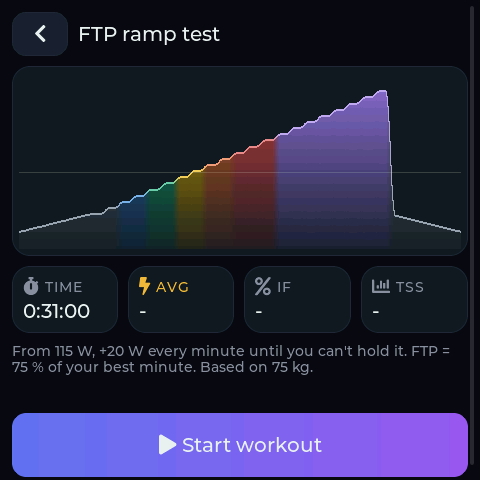
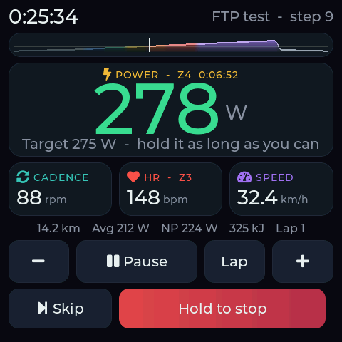
Every workout and plan scales with your FTP, so a new rider should start with a test. The device has a built-in ramp test: Workouts → FTP ramp test, or the button on the home screen while your FTP is untested. It takes about 20–25 minutes and needs no pacing:
- 5 minutes warm-up.
- Then the target rises every minute. It starts at 1.5 W per kg of your weight and adds 0.25 W/kg each minute (75 kg: 115 W, then +20 W). Set your weight before the test; your current FTP doesn't matter.
- Ride until you really can't hold the target. When your cadence stays under 60 rpm, or your power under 80 % of the target, for 10 seconds, the device beeps three times and switches to an easy 5-minute cool-down. The same happens if the trainer stops sending data for that long (connection lost), so you never come back to a step you didn't ride up to. You can also end the test yourself with Skip.
- Stop the ride as usual (hold Hold to stop). Your FTP is 75 % of your best minute. It is set right away (it can also be lower than before) and the summary shows it. If you don't trust the result, tap Keep old FTP … W.
The −/+ intensity buttons do nothing during the test, so the result stays comparable. The steps never go above your Max ERG; if you reach it, raise Max ERG and test again. A test with less than 2 minutes of the ramp gives no result. Repeat the test every 6–8 weeks, or let the Raise my FTP plan schedule it (Training plans).
If you already know your FTP from another app, simply enter it under Settings: the device then counts it as known.
FTP from your rides
After every ride of 20 minutes or longer, the device takes 95 % of your best 20-minute power in that ride. If that is higher than your current FTP, the summary screen offers Set FTP to … W (see After the ride). One tap accepts it; otherwise nothing changes. It is never applied on its own, because a single bad power reading would otherwise raise every future ERG target.
Max HR works the same way: if you held a higher heart rate than your max HR for 10 seconds in a ride, the summary offers Set max HR to … bpm. Your heart-rate zones move with it. A single spike from the strap doesn't count.
The web app shows the same estimate over all your rides (Power).
5. Riding
Free ride

Tap Free ride. The trainer simulates a road; you change virtual gears with − and + and the road's gradient with ⌄ Grade / ⌃ Grade (0.5 % steps). Road is the gradient you chose, sent is what the trainer gets after the virtual gear is applied.
The large number is your power (3-second average). Below it: cadence, heart rate and speed, then distance, average power, NP, energy and lap.
Leave the bike's real chain in one gear, by default 34 × 17 (front × rear). Virtual gears make the trainer harder or easier as if you shifted. If your real gear is different, set real_ratio in gears.json (see Settings reference).
Ride screen controls


In an ERG segment the power number turns green while you are within 5 % (at least 5 W) of the target.
Zones and laps: next to POWER you see your power zone (Z1–Z7 by % of FTP, the same zones as in the web app) and how long you've been in that zone this ride. The heart-rate card shows your heart-rate zone (Z1–Z5 by % of max HR). When a lap or a workout interval ends, the line under the cards shows it for 10 seconds: Interval 3 done: 0:10:00 251 W avg 156 bpm. Laps and intervals shorter than 5 seconds (a quick skip) aren't shown.
Auto-pause: stop pedalling and let the flywheel slow down below 5 km/h, and after 3 seconds the ride pauses by itself (PAUSED - PEDAL TO RESUME, lowest resistance, timer stops). Pedal at 30 rpm or more for 2 seconds and it carries on. Coasting downhill with the flywheel still turning doesn't pause. A pause you tapped yourself only ends with Resume, so the trainer never picks up just because a pedal turns while you're off the bike. There's no auto-pause in the ramp of an FTP test.
| Control | Free ride / free segment | ERG workout segment |
|---|---|---|
| − / + | virtual gear down / up | intensity −5 % / +5 % (50–150 %) |
| ⌄ Grade / ⌃ Grade | road gradient | hidden |
| Skip | – | jump to the next interval |
| Pause | timer stops, lowest resistance | same |
| Lap | starts a new lap in the ride file | same |
| Hold to stop | press and hold to end the ride | same |
Zwift Ride buttons
| Button | Action |
|---|---|
| Shift up / down (either side) | same as + / − on screen: virtual gear, or ERG intensity ±5 % |
| D-pad up / down | road gradient +/− 0.5 % (free ride) |
| A (short) | pause / resume; on the summary screen: done |
| Y (short) | lap |
| D-pad right (hold 1 s) | skip to the next interval |
| B (hold 1 s) | stop the ride |
The table above is for a running ride. Before a ride, the controller moves through the menus:
| Button | In the menus |
|---|---|
| D-pad left / up | highlight the previous button (it turns light blue) |
| D-pad right / down | highlight the next button |
| A (short) | press the highlighted button |
| A (hold 1 s) | start a ride: on Free ride or Start workout that one, with nothing highlighted a free ride |
| B (short) | back to the previous screen |
A short A never starts a ride. Buttons that need a held finger on the screen (Hold to delete) and the name keyboard stay touch-only.
The button bits were checked against a real Zwift Ride. Zwift firmware updates may change them; if a button does the wrong thing or nothing, see Troubleshooting.
Beeps: 1 = next interval in 3 seconds, 2 = new interval started, 3 = workout finished (you continue in free ride until you stop).
After the ride

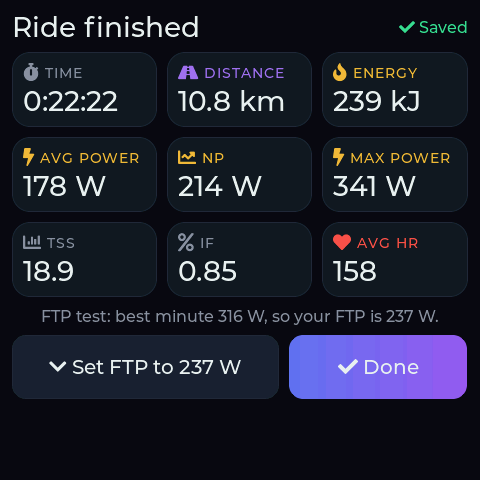
The summary shows time, distance, energy, average, normalized and maximum power, TSS, IF and average heart rate, and at the top right whether the ride was saved. If the ride suggests a higher FTP, Set FTP to … W appears, and Set max HR to … bpm if you went above your max HR (both buttons get shorter labels when they appear together); after an FTP test the new FTP is already set and Keep old FTP … W undoes it (see FTP from your rides and FTP test). Tap Done.
The ride is saved as .csv and .fit in the rider's folder /rides/<id>/. Rides shorter than 60 seconds are discarded.
If the power fails mid-ride, the ride is not lost: everything up to the last 10 seconds is on the card, and the FIT file and summary are completed on the next start, for the rider who was riding.
Record on an Apple Watch too
The head unit also shows up as a Bluetooth power and cadence sensor called JustRide. It passes on the trainer's power and cadence (the same numbers as on the ride screen), so an Apple Watch records the ride in the Fitness app together with the heart rate it measures itself. A bike computer (Garmin, Wahoo) can connect the same way. It only sends numbers: nothing can control the trainer through it.
Once: pair the watch
- Turn on the head unit (the home screen is enough).
- On the Apple Watch (watchOS 10 or later), not on the iPhone: open Settings → Bluetooth and scroll down to Health devices.
- Wait for JustRide to appear and tap it. No code is needed. The head unit's home screen now shows Watch: Connected.
The iPhone's Settings → Bluetooth never lists JustRide: iOS doesn't show fitness sensors there (the KICKR doesn't appear either). That's normal. On an iPhone, sensors are added inside an app (Zwift, Wahoo SYSTM, Rouvy: add a power source and pick JustRide). nRF Connect shows it in its scanner if you just want to check it's there.
Each ride: where to start what
| Step | Where | What |
|---|---|---|
| 1 | Head unit | Turn it on and check the right rider is chosen on the home screen. The trainer, the Zwift Ride and a strap connect by themselves. |
| 2 | Apple Watch | Open the Workout app and start Indoor Cycle (not Outdoor Cycle). The watch connects to JustRide by itself; power and cadence show 0 or – until you pedal. |
| 3 | Head unit | Start the training here: Free ride, or Workouts → pick one (today's plan session is listed first) → Start workout, or an adaptive ride. The head unit sets the trainer's resistance, counts the intervals and beeps; the watch just shows and records the numbers. |
| 4 | Head unit | At the end, stop the ride with a long press (or let the workout finish) and tap Done on the summary. |
| 5 | Apple Watch | End the workout on the watch. It goes to Apple Health / Fitness; the head unit has already saved its own FIT and CSV files. |
Start the watch before the head unit and stop it after, so the watch has the whole ride. The workout itself (targets, ERG, intervals) always runs on the head unit: the watch has no idea it's a structured workout and just shows Indoor Cycle.
Heart rate: watch or strap?
The watch measures your heart rate, but it doesn't send it to the head unit: watchOS can't act as a Bluetooth heart-rate sensor. So the head unit's ride screen, its FIT/CSV files, the HR zones in the web app and adaptive parts with a heart-rate goal get no heart rate from the watch.
| Setup | Apple Health gets | Head unit gets |
|---|---|---|
| Watch only (as above) | power, cadence, heart rate | power, cadence, no heart rate |
| Watch + chest strap (Polar H10, Garmin HRM, Wahoo TICKR …): the strap connects to the head unit (3.7), the watch stays as above | power, cadence, heart rate (from the watch) | power, cadence, heart rate (from the strap) |
| Watch as heart-rate sensor with a third-party app (e.g. HeartCast, Echo) that sends heart rate like a strap | usually only what that app saves: the watch runs one workout at a time, so Indoor Cycle with power can't run alongside | power, cadence, heart rate (not tested yet) |
For the full picture in both places, use a chest strap. Up to two receivers (watch, bike computer) can connect to JustRide at once.
6. Workouts
Workouts are Zwift .zwo files in /workouts/ on the SD card, shared by all riders. Power is always given as a fraction of FTP (0.9 = 90 %), so the same file fits every rider: the device scales it to the active rider's FTP.
Choose and check a workout


Tap Workouts. Each workout in the list shows its length and TSS and a small profile in zone colours (grey parts are free riding); routes show distance, climbing and their elevation coloured by gradient. Training-plan workouts come first. Tap one for the preview, which shows:
- the profile: each bar is the target power over time, coloured by power zone (grey Z1 < 55 %, blue Z2 < 75 %, green Z3 < 90 %, yellow Z4 < 105 %, orange Z5 < 120 %, red Z6/Z7 above; the same zones as in the statistics, see How the numbers are calculated). The thin line is 100 % FTP. Free-ride parts are dark and flat;
- duration, average watts, IF and TSS if you ride it exactly on target (free-ride parts are counted as 50 % FTP), and the peak target in watts.
Tap Start workout to ride it, or ‹ to go back. During the ride a small copy of the profile sits under the timer: the part you have done is dimmed and a white line marks where you are.
Zone rides and adaptive parts: ride to a goal
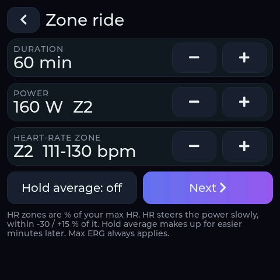
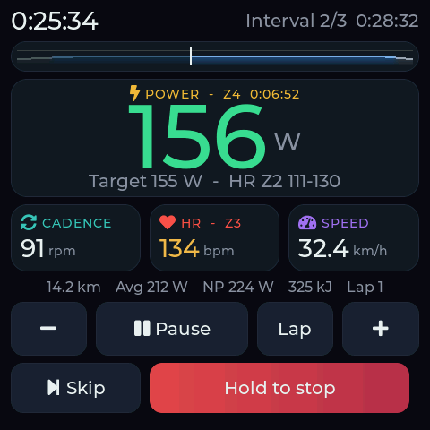
In an adaptive part the device changes the ERG target while you ride, to meet goals you set. For zone training, start one with Workouts → Zone ride: HR zone, power, average: choose the duration, the power (its power zone is shown next to it), a heart-rate zone (Z1–Z5, or Off below Z1) and whether to hold the average, then Next shows the preview. The zone is stored as % of max HR, not as bpm: the device works out the bpm from the max HR of the rider who starts the ride, so a zone 2 workout stays right when your max HR changes or someone else rides it. The ride is 10 min warm-up, the adaptive part, and 5 min cool-down. Adaptive parts can also be built in the web app (7.4) and combined with normal parts.
- Heart-rate zone or range: above the range the target drops by 5 W every 20 s (10 W when you're more than 5 bpm above); below it, it rises by 5 W every 20 s. Without a heart-rate signal it never rises, and after a minute it goes back towards the planned power.
- Hold the average: if you fell short (for example because of the HR limit), the target is raised later to make up for it, spread over the rest of the part (at least one minute) and by at most 5 W every 10 seconds, never in one jump. Seconds where you stop pedalling (to drink, say) and paused time don't count as falling short. In this mode the HR range only limits, it never raises.
- Cadence range (web app only): a cue, never a power change. The cadence turns orange and the device beeps once when you're out of range for 5 s, at most once a minute.
The target always stays between the part's lower and upper bound (by default 30 % below and 15 % above its power, never under 30 % FTP) and under your Max ERG. The target line shows the current target, the average so far against the goal, and the HR range; heart rate and cadence are green inside their range and orange outside.
Routes: ride a real climb
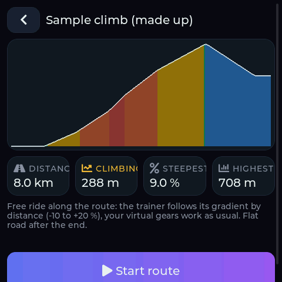
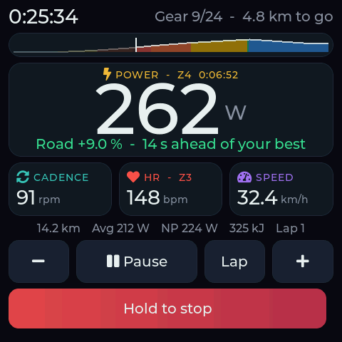
A route is a free ride where the trainer follows the gradient of a real road by distance. Import a GPX file in the web app under Routes (7.5); it appears under Workouts with a map pin. An SD card prepared with tools/sd_deploy.sh also has a made-up Sample climb to try it.
- Your virtual gears work as in free ride; the grade buttons are hidden because the route sets the road. The ride screen shows the profile with your position, the gear and the kilometres to go; the line under the power shows the road gradient and what was sent to the trainer.
- The gradient is taken over 100 m and limited to −10 … +20 %, like everywhere else. A single bad GPS point can't turn into a wall.
- Distance comes from the trainer's speed, so on a steep climb you cover it as slowly as on the real road.
- At the end the device beeps three times and you carry on along a flat road until you stop the ride. The ride is saved under the route's name.
- Race your best: from the second time on, you race your fastest earlier ride on the route. The gradient line shows how far ahead (green) or behind (orange) you are, in seconds: how much longer or shorter your best ride needed to get as far as you are now. At the end the summary says how it went. The best ride is picked from your rides that covered the whole route (the fastest few by average speed are checked second by second when you start, which can take a few seconds). Rides are compared by riding time, so pauses don't count.
Design your own
Option 1: export from another app. Many workout tools can save or export Zwift .zwo files, for example the workout editor in the Zwift app (it saves to Documents/Zwift/Workouts/), workout libraries such as whatsonzwift.com, or the workout builder in intervals.icu (look for a Zwift / .zwo export). Copy the file to the card or upload it over Wi-Fi.
Option 2: write it yourself. A .zwo file is plain text; any text editor works. Durations are in seconds, power is a fraction of FTP:
<workout_file>
<name>Threshold 2x20</name>
<workout>
<Warmup Duration="600" PowerLow="0.5" PowerHigh="0.75"/>
<IntervalsT Repeat="2" OnDuration="1200" OffDuration="300" OnPower="0.95" OffPower="0.55" Cadence="90"/>
<Cooldown Duration="300" PowerLow="0.6" PowerHigh="0.4"/>
</workout>
</workout_file>That is 10 min warm-up rising from 50 to 75 %, two 20-minute blocks at 95 % with 5 minutes easy in between, and 5 min cool-down. The building blocks, in the order you list them:
| Element | Attributes | What it does |
|---|---|---|
SteadyState | Duration, Power | constant target |
Warmup, Cooldown, Ramp | Duration, PowerLow (start), PowerHigh (end) | target changes evenly from start to end |
IntervalsT | Repeat, OnDuration, OffDuration, OnPower, OffPower | repeated on/off pairs |
FreeRide, MaxEffort | Duration | no target: free ride with virtual gears for that time |
workout (JustRide only) | JrRampTest="1" | marks an FTP ramp test: the device replaces the segments with its own ramp for the active rider (see FTP test). The generator writes it for FTP ramp test |
SteadyState (adaptive, JustRide only) | JrHrLow, JrHrHigh (bpm, or fractions of max HR when both are 1 or less, e.g. 0.6–0.7 for HR zone 2), JrAvg="1" (hold the average), JrCadLow, JrCadHigh (rpm), JrMin, JrMax (bounds, fraction of FTP) | adaptive part (see Adaptive rides); Zwift ignores these attributes and rides it as a steady part. At most 16 per workout |
| any of the above | Cadence (rpm), CadenceResting (rpm, for IntervalsT off parts) | cadence shown as a target on the ride screen |
Limits: up to 200 segments (each interval repeat counts as two), 10 hours per segment, 300 % FTP. Whatever a file says, ERG targets never go above the rider's Max ERG. Elements the device doesn't know (text messages, textevent, …) are ignored. Name files without special characters, e.g. threshold_2x20.zwo; underscores are shown as spaces.
Check a new workout on the device with the preview before you ride it: if the profile looks wrong or the workout doesn't appear, the file has a typo (open it in a browser: it shows XML errors).
7. Wi-Fi and the web app

Wi-Fi is on whenever you're not riding: it starts with the device and again after each ride. Wi-Fi → Turn off switches it off until the next ride or restart. The Wi-Fi screen shows how to reach the device:
- Home network (if
wifi_ssidis set): openhttp://trainer.local/(or the IP address shown) in a browser on the same network. - Own hotspot (if no home network is set, or it isn't reachable within 15 seconds): connect your phone/laptop to the Wi-Fi JustRide with the password shown on the screen, then open
http://192.168.4.1/.
The address opens the web app. It comes from the SD card and runs entirely in your browser, with no internet connection. It works on a laptop and on a phone. Pick the rider at the bottom left (on a phone: top right); it starts with the rider who is active on the device. If the page says the web app is missing, copy it to the card (3.4) or upload it (7.8).
7.1 Today
Your form (fitness minus fatigue), fitness (42-day training load, CTL) and fatigue (7-day load, ATL), the last 7 days, the next session of your plan and your latest rides. Negative form while you build is normal; below −30 you need rest.

7.2 Rides
All rides by month. Open one for power, heart rate and cadence over time (hover for values, drag to zoom), W/kg, time in power and heart-rate zones, HR drift and how well you hit each interval. FIT file downloads it for intervals.icu, Strava or Garmin Connect. Rides recorded before the clock was set are listed as “date unknown” and left out of fitness and form.

7.3 Power
Your power curve (best average power for 1 s … 60 min, all time vs. last 90 days), key bests and an FTP estimate: 95 % of your best 20 minutes, with W/kg. The device never changes your FTP by itself; set it under Settings.

7.4 Workouts: builder and generator
Left: the workouts on the device. Click one to edit it. Right: the editor with the profile (coloured by power zone), length, training load (TSS), intensity (IF), average power and work for your FTP.
- Blocks: warm-up, steady, intervals (repeats × on/off), ramp, free ride (no target, you ride by feel), adaptive and cool-down. Power is in % of FTP, so the workout fits whoever rides it; the watts next to each field are for the FTP shown below the profile. Times are minutes:seconds. Arrows move a block, the copy icon duplicates it.
- Adaptive blocks take a power plus any of: an average to hold, a heart-rate goal (a zone Z1–Z5, another range in % of max HR, or fixed bpm; zones and % follow the rider's max HR on the day, the bpm next to them are for the active rider), a cadence cue range, and the bounds the power may move between (empty = default). The profile shows the bounds as a dashed band. How the device steers is described in Adaptive rides.
- Generate builds a workout for you: pick a type (recovery, endurance, HR zone 2, steady average, tempo, sweet spot, threshold, VO2max, sprints, FTP ramp test), length and difficulty. HR zone 2 is endurance steered by your heart rate, in heart-rate zone 2; Steady average holds an average power with an HR ceiling and a cadence cue.
- Adapt to me (on by default) uses your history: targets are 3–6 % lower when your form shows you're tired and 2 % higher when you're fresh; VO2max and sprint targets come from your own 5-minute and 1-minute bests. The description says what was adapted.
- Save to device writes the
.zwoto the card; it appears on the device under Workouts right away. Download saves it for Zwift or elsewhere, Import .zwo opens a file from your computer.
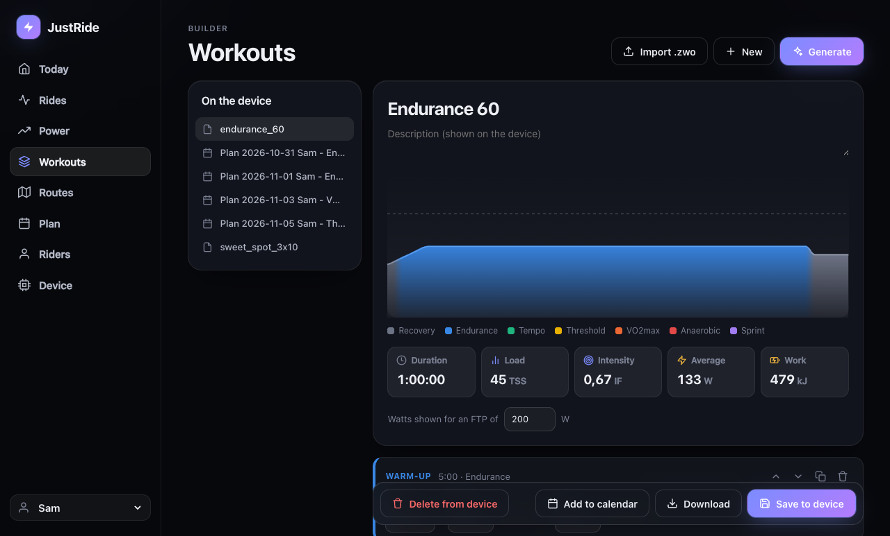
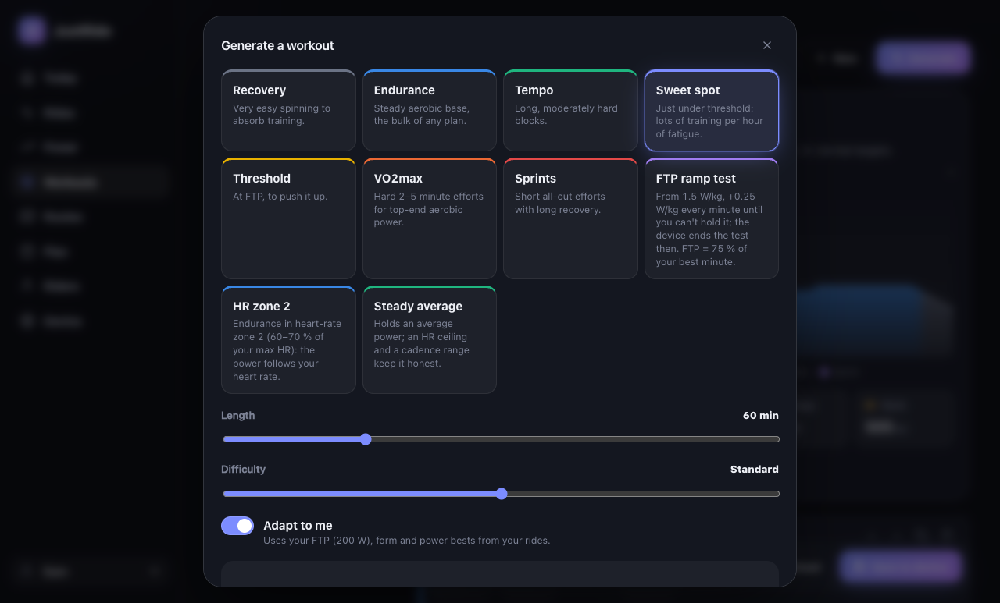
The device runs at most 200 steps per workout (an interval repeat counts as two); the editor warns before that. ERG targets are still capped by the rider's max ERG power on the device.
Add to calendar: once a workout is saved on the device, Add to calendar (next to Download) puts it in your calendar. Choose the day and your preferred training time (remembered for next time). On an iPhone or iPad the calendar asks right away whether to add the event; on a computer a .ics file is downloaded, and opening it adds the event (Apple Calendar, Outlook, Google Calendar via Import). The event has the workout's duration, TSS and IF, the average power at the rider's FTP, where to find it on the device, and a reminder 15 minutes before. Adding the same workout at the same time again updates the event instead of duplicating it. The calendar entry doesn't start anything: start the workout on the device as usual.
7.5 Routes
Routes → Import GPX turns a GPX file into a route for the device. It needs elevation data: routes planned in Komoot, RideWithGPS, Strava's route builder or Garmin Connect have it, as do rides recorded on a bike computer. Some exports leave it out; then the app says so. The app measures the distance, takes the elevation every 10 m and smooths it over about 100 m (GPS heights are noisy), and shows the profile coloured by gradient with distance, climbing, the highest point and the steepest 100 m. Name it and Save to device. Routes up to 200 km. The list below shows the routes on the device; the bin deletes one.
7.6 Training plans
Plan → Make a plan: pick a goal (raise FTP, build endurance, stay in shape), the days you can ride (tap a riding day again to make it the long ride), the length in weeks and your time per week. The preview shows every session and the weekly load; every 4th week is easier. Raise my FTP starts and ends with an FTP ramp test. Any plan starts with one while the rider's FTP is untested, and the Today page suggests the test until then.
After Start plan the next 7 days are put on the device as workouts named Plan <date> <type>, listed first under Workouts. Ride the one for today. Each time you open the web app they're rebuilt for your current form and bests (adapt to me), and past ones are removed. If you edit one of them in the builder, it's kept as you saved it. With more than one rider, the files also carry the rider's name. The calendar ticks off the days you rode and shows planned vs. ridden load per week.
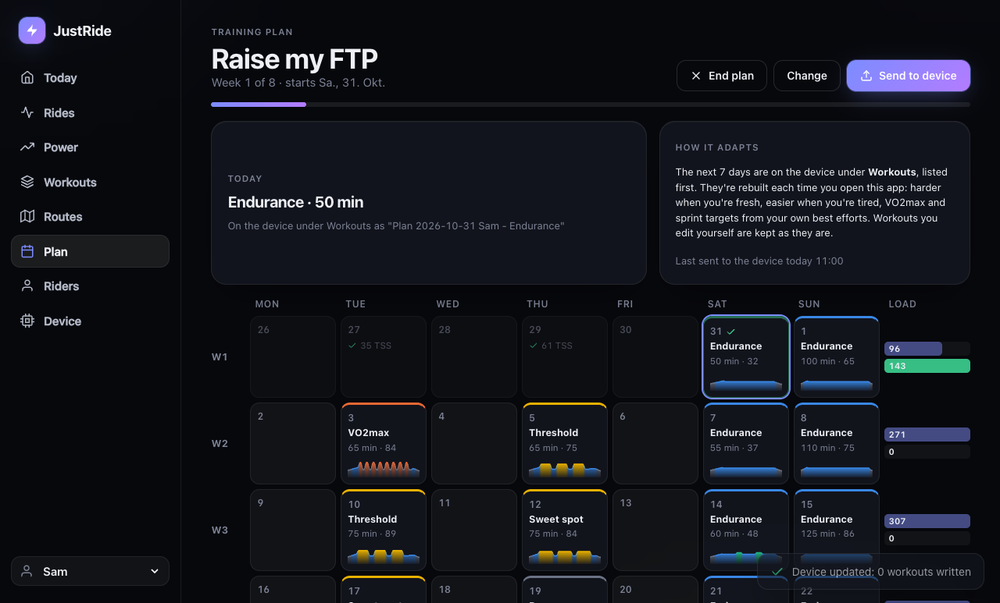
Missed a session? The plan bends a little instead of breaking. When you open the web app after a day you didn't ride (any ride that day counts as done):
- A missed key session (sweet spot, threshold, VO2max, tempo, ramp test) moves to the next easy day in the coming week, not your long ride, and if possible not right next to another hard day. The easy ride on that day is dropped, so the week doesn't get heavier. The calendar shows the old day dashed with moved to … and the new day with from …; the device gets the workout under the new date.
- A missed easy ride is simply dropped: the plan continues as planned.
- A session moves only once. Missed again, or no easy day free in the next 7 days, it's dropped. After several missed key sessions, the most recent one gets the free day.
To ride a session earlier instead, just ride it: the next 7 days are on the device. After a longer break (illness, holidays), Change rebuilds the plan from today with the weeks that are left.
Open the web app at least once a week (on any device on your Wi-Fi) so the next sessions get onto the head unit.
7.7 Riders
The Riders page does everything the rider screens on the device do: add a rider, rename (click the name), set FTP, Max ERG, weight and max HR (same ranges as in 4), Make active to choose who rides next, and Delete (asks first; their rides stay on the SD card). Save lights up when you changed something; out-of-range values are marked red and the device checks them again. Changes are saved on the device right away. While a ride is running the device has Wi-Fi off, so this only works between rides.
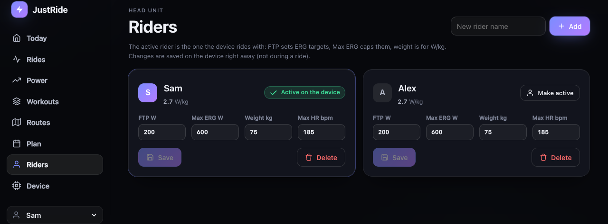
7.8 Device page, updating the web app
The Device page lists all ride files for download, uploads .zwo files, flashes firmware (8) and has a SQL console (DuckDB) over summary and bests; it loads 34 MB the first time you run a query.
To update the web app over Wi-Fi, without taking out the card: on the device tap Wi-Fi → Allow firmware update, then on your computer run
tools/web_deploy.sh trainer.local # or the IP address; ~1 minute
tools/web_deploy.sh trainer.local --no-vendor # app files only, a few secondsThe screenshots show generated sample rides (tools/web_dev.py runs the web app on your computer with sample data, or with --device <address> against your head unit).
8. Firmware updates
Over USB: idf.py -p /dev/cu.usbmodem* flash as in 3.3.
Over Wi-Fi:
- Build on your computer:
idf.py build→ the file isbuild/justride.bin. - On the device: Wi-Fi → Allow firmware update. After this tap the device accepts one update within 5 minutes; without it the device refuses them, so nobody else on your network can flash it. Tap again for another try.
- In the web app open Device → Choose firmware and pick the
.bin. Don't unplug the board while it says “Uploading”. - The device restarts. If the new firmware fails to start, the device automatically goes back to the previous one.
9. Settings reference
/config/settings.json
Riders are easiest to manage on the device; the file is mainly for Wi-Fi. An example:
{
"user": "u1",
"next_user_id": 3,
"users": [
{ "id": "u1", "name": "Sam", "ftp_w": 250, "ftp_known": true, "max_erg_w": 600, "weight_kg": 75, "max_hr": 185 },
{ "id": "u2", "name": "Anna", "ftp_w": 190, "ftp_known": true, "max_erg_w": 450, "weight_kg": 62, "max_hr": 178 }
],
"crr": 0.004,
"cw": 0.51,
"wifi_ssid": "MyHomeWifi",
"wifi_password": "secret",
"ap_password": "k7m2xq9fha",
"tz": "CET-1CEST,M3.5.0,M10.5.0/3"
}| Key | Default | Range | Meaning |
|---|---|---|---|
user | first rider | Id of the active rider | |
users[].id | u1 … u9999 | Folder name under /rides/ and key for the paired strap. Ids are never reused, so a new rider never inherits someone's rides. Don't change it by hand. | |
users[].name | Rider | 1–15 chars, ASCII | Shown on the device and in the statistics |
users[].ftp_w | 200 | 50–600 | FTP; workouts are scaled to it |
users[].ftp_known | false | true/false | false: the FTP is still the default guess, so the device and web app suggest the FTP test. Becomes true when you accept a result or enter an FTP. Missing (older files): true unless the FTP is 200 |
users[].max_erg_w | 600 | 100–1500 | Highest ERG target the device will ever send |
users[].weight_kg | 75 | 30–200 | W/kg in the statistics |
users[].max_hr | 185 | 100–230 | Heart-rate zones (ride screen, zone rides, statistics) |
crr | 0.004 | 0.001–0.02 | Rolling resistance sent to the trainer in free ride |
cw | 0.51 | 0.1–2.0 | Wind resistance coefficient (kg/m) in free ride |
wifi_ssid, wifi_password | empty | Your home Wi-Fi | |
ap_password | random | 8–63 chars | Password of the device's own hotspot |
tz | UTC0 | POSIX TZ rule | Time zone for ride file names and the local time in FIT files. Easiest to pick on the device (Wi-Fi screen). Other zones: the rule for your city is the last line of /usr/share/zoneinfo/<Region/City> on a Mac or Linux computer, e.g. EST5EDT,M3.2.0,M11.1.0 for New York. |
Invalid or out-of-range values are ignored and the default is used; an invalid rider entry is skipped. If the file is not valid JSON (a missing quote or comma), the device uses defaults for everything, logs settings.json is not valid JSON and leaves your file unchanged so you can fix it.
A settings.json from before riders existed (with ftp_w and max_erg_w at the top level) is taken over automatically: those values become the first rider's.
/config/gears.json (optional)
Without this file there are 24 virtual gears from ratio 0.75 to 5.5, and the real gear is assumed to be 34 × 17 (ratio 2.0).
{ "real_ratio": 2.0, "ratios": [0.75, 0.9, 1.05, 1.2, 1.4, 1.6, 1.8, 2.0, 2.25, 2.5, 2.8, 3.1, 3.5, 4.0, 4.6, 5.5] }real_ratio = front teeth ÷ rear teeth of the gear your chain is actually in. ratios: 2–30 values, ascending. The gear table is shared by all riders.
10. How the numbers are calculated
The device records one sample per second while the ride runs (pauses are not recorded). Every number below is computed from these samples, on the device for the ride screen, the summary and the summary files, and in your browser for the statistics. FTP, weight and max heart rate are the rider's values at the time of the ride; changing them later doesn't change old rides.
Missing data
- Trainer values older than 3 seconds and heart rate older than 5 seconds count as unknown: the CSV has an empty field, never a repeated old value.
- Seconds with unknown power count as 0 W in average power, NP, energy and best efforts. A trainer dropout therefore lowers these numbers a little; the time still counts.
- Averages of cadence and heart rate only use seconds where the value is known and above 0, so coasting doesn't lower your average cadence.
One ride
| Number | How |
|---|---|
| Power (ride screen) | Average of the last 3 seconds while riding; the trainer's latest value otherwise. |
| Time | Riding time without pauses. |
| Moving time | Seconds with power or cadence above 0. |
| Distance | Sum of the trainer's speed over all seconds. The KICKR computes that speed itself from the flywheel, so it is a virtual distance. |
| Average power | Sum of power ÷ number of seconds (seconds at 0 W included). |
| Max power | Highest single second. |
| Energy (kJ) | Sum of power over all seconds ÷ 1000 (1 W for 1 s = 1 J). The FIT file reports the same number as kcal, the usual approximation: the body is about 24 % efficient and 1 kcal = 4.184 kJ, so the two roughly cancel. |
| NP (normalized power) | Rolling 30-second average of power; raise each value to the 4th power, average them, take the 4th root. NP weights hard efforts more than the plain average and estimates what a steady ride of the same strain would have been. Needs at least 30 seconds. |
| IF (intensity factor) | NP ÷ FTP. 1.00 = a full hour at FTP. |
| TSS (training stress score) | Hours × IF² × 100 (= seconds × NP × IF ÷ (FTP × 3600) × 100). One hour at FTP = 100. |
| W/kg | Average power ÷ weight. |
| Best efforts | For 1 s, 5 s, 10 s, 30 s, 1, 2, 5, 10, 20, 30 and 60 min: the highest average power over any window of that length in the ride. |
| FTP suggestion | 95 % of the best 20 minutes, offered only if higher than the current FTP (see FTP from your rides). |
Workouts
- ERG target = the workout's percentage × FTP × the intensity you set with + / − (100 % by default), never above Max ERG (and never above 1500 W).
- Preview estimates assume you ride exactly on target, second by second. Free-ride parts count as 50 % FTP. Average = mean of the targets; IF = 4th root of the mean of the targets to the 4th power (like NP, but without the 30-second smoothing); TSS = hours × IF² × 100.
- Interval compliance (statistics, ride detail): your average power in each ERG interval ÷ its average target.
Statistics over time
| Number | How |
|---|---|
| Fitness (CTL) | Exponentially weighted average of daily TSS with a 42-day time constant: each day, CTL += (that day's TSS − CTL) ÷ 42. Days without a ride count as TSS 0. Starts at 0 on the day of the first recorded ride, so it takes several weeks to mean much. |
| Fatigue (ATL) | The same with 7 days. |
| Form (TSB) | Yesterday's CTL − yesterday's ATL. Negative = tired from recent training, positive = rested. |
| Power curve | For each best-effort duration, the highest value of all rides (all time) and of the rides of the last 90 days. |
| FTP estimate | 95 % of the best 20 minutes of all rides; with W/kg from the most recent weight. |
| Rides / TSS / hours / kJ cards | Sums over the last 7 or 30 days, counted back from now. |
Days are calendar days in UTC: a ride that starts shortly after midnight in Germany counts for the previous day in CTL, ATL and TSB.
Zones
| Power zone (% of FTP) | Heart-rate zone (% of max HR) |
|---|---|
| Z1 Recovery: below 55 % | Z1: below 60 % |
| Z2 Endurance: 55–75 % | Z2: 60–70 % |
| Z3 Tempo: 75–90 % | Z3: 70–80 % |
| Z4 Threshold: 90–105 % | Z4: 80–90 % |
| Z5 VO2max: 105–120 % | Z5: 90 % and above |
| Z6 Anaerobic: 120–150 % | |
| Z7 Neuromuscular: 150 % and above |
The lower limit belongs to the zone (exactly 75 % is Z3). Time in zone counts seconds with a known value. The workout profile on the device uses the same power zones as colours. To ride in a heart-rate zone (zone rides, adaptive blocks) Z1 is 50–60 % and Z5 is 90–100 % of max HR.
Heart-rate drift (Pa:HR)
The ride is split into a first and second half by time. For each half, using only seconds with both power and heart rate: average power ÷ average heart rate. Drift = first half ÷ second half − 1. Around 0 % means your heart rate stayed in step with your power; above about 5 % on a steady endurance ride means your heart rate crept up (fatigue, heat, too little to drink). It says little about interval workouts.
11. Troubleshooting
Keep the USB cable connected to your computer and run idf.py -p /dev/cu.usbmodem* monitor: the log explains most problems. At the jr> prompt these commands help:
| Command | What it does |
|---|---|
help | list commands |
i2c | list chips on the internal bus (expect 0x24, 0x51, 0x14 or 0x5D) |
pattern 0 / 1 / 2 | colour bars / white / black on the screen |
sd | SD card write/read speed test |
buzz | short beep |
bl 0 … bl 255 | backlight brightness (which end is bright isn't confirmed yet; tell us) |
mem | free memory |
zap dump on / off | log every packet from the Zwift Ride as hex |
| Problem | What to try |
|---|---|
| Screen stays dark | Check the log for CH32V003 not found (wrong board version, see 3.1) or I2C errors and send it. Run i2c. |
| Colours wrong, image shifted or flickering | Run pattern 0 (should be white, yellow, cyan, green, magenta, red, blue, black from left to right). Send a photo; the display settings in bsp.c need adjusting. |
| Touch doesn't react | Log says GT911 not found? Send the i2c output. |
| No SD card on the home screen | Card must be FAT32 (3.4), inserted with the board unplugged. Run sd. |
| Trainer stays searching | Close every other app connected to the KICKR, pedal to wake it, then try Settings → Forget paired devices. |
| Wrong heart-rate strap connects | Switch to the right rider, take the other strap off (or out of range), then Settings → Forget paired devices. |
| Zwift Ride doesn't connect | Close the Zwift app (on phone, tablet and PC), press a button to wake it, check the log for zap. |
| Zwift Ride button does the wrong thing / nothing | Run zap dump on, press each button once slowly (note the order), and send the log. The button table is then corrected from your recording. |
| Apple Watch doesn't find JustRide | Look on the watch under Settings → Bluetooth → Health devices, not on the iPhone (Record on an Apple Watch). Keep the watch within a few metres; at most two receivers can be connected, so disconnect a bike computer or second watch first. |
| Watch connected but power shows 0 or – | Power and cadence only flow while the trainer sends data: pedal. Check the head unit's ride screen shows power; if it does and the watch doesn't, send the log (ble_srv lines). |
| Trainer connects but resistance doesn't change | Check the log for request control refused or rejected; another app may still have control. |
| Board switches itself off | Use the computer's USB port or a plain 5 V supply and send the log. If it keeps happening, restore Waveshare's factory firmware to check whether the board itself is fine. |
| Clock not set | Set your home network in settings.json and open the web app once (the clock comes from the router or from the browser). wifi time on the USB console shows the clock state. |
No log / jr> doesn't answer after flashing | Unplug the board and plug it back in. This happens sometimes after a flash with an SD card inserted. |
trainer.local doesn't open | Use the IP address shown on the device instead (some Android phones don't support .local names). |
| Firmware update refused | Tap Allow firmware update on the device first (valid 5 minutes, one upload per tap). Upload from the device's own start page; other pages and tools without the X-JustRide header are refused. |
Not supported yet: Zwift Click and Play (encrypted protocol), power meters and cadence sensors other than the trainer, intervals.icu upload.
Regenerating the screenshots
The device screenshots come from tools/ui_shots/shots.sh, which compiles main/ui.c with LVGL on the computer and writes docs/img/*.png (needs one idf.py build first). Run it after changing the screens.